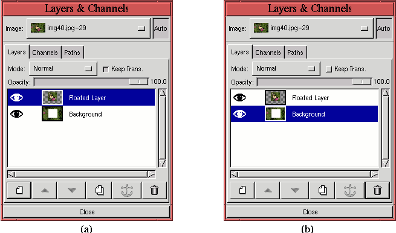

As already discussed, layers are the most important image components for image manipulation. They are the basic raw materials you want to work with and combine. In most every GIMP project, layers need to be moved, resized, positioned, transformed, cut, pasted, and so on. These types of layer operations are discussed in this section.
One of the most basic layer operations is positioning. Compositing from a set of raw image materials requires that the various components, each on a separate layer, be appropriately positioned. This section describes several techniques for layer positioning.
Moving a layer is accomplished using the Move tool. This tool is invoked by clicking on the Toolbox button displaying the four-way arrow icon. Clicking on this tool changes the mouse cursor to a four-way arrow when it is in the image window. Clicking and dragging while the cursor is in the image window causes the layer underneath the mouse cursor to move. The layer affected is the one that is highest in the layer stack and has pixels more than 50% opaque under the mouse cursor (see Section 5.7 for more on opacity and transparency). This means that if the top layer is transparent at the mouse cursor position, it is not moved. This also means that if the active layer is transparent at the mouse cursor position it is not moved. Rather, it is the first layer from the top that has more than 50% opaque pixels under the mouse cursor that is moved. Alternatively, the active layer can be forced to move by Shift-clicking and dragging. This moves the active layer regardless of its visibility, degree of transparency, or position with respect to the cursor.
Sometimes a layer needs to be positioned more carefully than can be easily judged by eye. Under these circumstances, it is often convenient to use guides to facilitate their placement. Guides are useful because they have a snapping property . A layer released sufficiently near a guide will jump to the guide position. The snapping property of guides is controlled by the Snap to Guides checkbox in the Image:View menu. The checkbox must be toggled on for the snapping property to work.
To illustrate how guides are useful for layer positioning, the three
planet images shown in Figures 2.13(a), (b), and (c)
The objective is to organize the planets on a diagonal, but with a uniform black border between them and the window edge. This was done by placing two horizontal and two vertical guides in the image window, each positioned exactly three ruler tick marks from the edge. Where do the guides come from? Well, they are hidden inside the rulers at the left and top edges of the image window. Clicking on a ruler and then dragging the mouse into the image window drags a guide along with it. Releasing the mouse button positions the guide. Any number of guides can be created in this way. Once the guides are positioned, their visibility can be toggled on or off with the Toggle Guides function, found in the Image:View menu, or by typing C-S-t in the image window.
The guides can be seen in Figure 2.14 as blue dashed lines. The Jupiter and Earth layers were positioned with the Move tool so that their corners were aligned at the cross-hairs of the guides. It can be seen that the active layer, designated by the yellow dashed boundaries shown in Figure 2.14, are perfectly aligned with the guides. That the layers snapped to the guides simplified the positioning operation. When no longer needed, the guides can be moved off the image by first activating the Move tool from the Toolbox and then using the mouse to drag the guides back into the rulers.
As was seen in Figures 2.2 and 2.10(a), the layers in an image need not all be the same size. Furthermore, changing a layer's dimensions can be quite useful. In the parlance of the GIMP, a layer can be resized, which means that its boundaries are shrunk or enlarged without changing the dimensions of the image's contents. Alternatively, a layer can be scaled, which means that the dimensions of the layer are changed and the image contents are stretched or squeezed to exactly fit within the new layer boundaries. Six functions in the GIMP resize or scale layers and images:
Scaling an image results in changing the dimensions of all the layers
at once, while simultaneously stretching or squeezing the image
contents to fit. The function Scale Image , found in the Image:Image menu, is the tool that
accomplishes this. Figure 2.15(a)
At first blush it would seem that the Canvas Size function found in the Image:Image menu should work in a similar fashion to Scale Image. However, there is an important difference between resizing an image and scaling it. Because the image contents do not change with the image boundaries, there is a non-unique choice in how they are positioned within the resized image window. Thus, when resizing to a smaller image window, the position of the image within the new window depends on the values for the new width, height, and X and Y offsets.
Figure 2.16
A better solution is to resize the image interactively using the Crop tool.
Figure 2.17
The result of using the Crop tool to nicely frame the wolf's head is shown in Figure 2.17(a). When using this tool, the Crop dialog appears, as shown in Figure 2.17(b). It is possible to crop the image by clicking on the Crop button in the dialog or by simply clicking inside the crop rectangle in the image window. This makes the image smaller and simultaneously discards the image parts outside of the window. Alternatively, the image can be resized by clicking on the Resize button in the Crop dialog. This makes the image window smaller without discarding the image parts outside the resulting window.
Figure 2.17(c) shows the result of cropping the image to the crop rectangle seen in Figure 2.17(a). From the above discussion, it should be clear that there is really no reason to use Canvas Size to make an image window smaller. It is simply more convenient to do it with the Crop tool.
Although Canvas Size is not optimum for making an image smaller,
it is quite useful for making it larger. This is especially valuable
when compositing several raw images. Typically you discover, after
positioning various imported layers, that the resulting image window
is not large enough to adequately frame the composition. When this
happens, Canvas Size is the tool that fixes the problem.
Figure 2.18
Figure 2.18(a) shows the original image, and Figure 2.18(b) shows the Set Canvas Size dialog box. This time the X and Y ratios are scaled to 125% of the original. The result is shown in Figure 2.18(c). Once the image window has been resized it is possible to reposition the image layer or layers using the Move tool.
As has already been discussed in this section, it is possible to scale an entire image. However, it is also possible to scale a single layer within an image. There are two tools for doing this in the GIMP: the Scale Layer function, found in the Layers menu, and the Transform tool in the Toolbox.
As for entire images, a layer can be scaled either smaller or larger. The most typical use of layer scaling is to adjust the relative size of an image on one layer with respect to an image in another. This is needed for almost every compositing project (for examples, see Chapter 7). When it is necessary to scale a layer smaller, either the Scale Layer function or the scaling option of the Transform tool will do the trick. However, the Transform tool might be preferable because it provides interactive control of the scaling process. Scale Layer relies on entering numbers into entry boxes in a dialog. It is difficult to choose the correct dimensions, which leads to repeatedly applying Scale Layer and Undo until the desired effect is achieved.
The problem of finding the right dimensions to scale a layer can sometimes be solved using the Measure tool, which is discussed in more detail in Section 2.6.5. A good example of using the Measure tool to determine the appropriate amount to rescale a layer is given in Section 7.5. Alternatively, the Transform tool provides interactive visual feedback of the scaling process. In addition, it can be used in conjunction with the Bezier Path tool and the Transform Lock icon in the Paths dialog to get very fine, interactive scaling control. The technique for this is discussed in Section 3.4.1, and a relevant example is shown in Section 7.2.
Scaling a layer larger should be avoided if possible, because this operation requires the interpolation of pixel values. Interpolation is an approximation process that creates pixels where there were none before and that, consequently, partially degrades the layer's image quality. Thus, when adjusting the relative sizes of several image components on different layers, it is preferable to scale down the larger components to match the size of the smaller ones rather than vice versa.
In the event that it is necessary to scale a layer larger, it is important to know that a layer cannot be scaled to dimensions larger than those of the existing image boundaries. To scale a layer to dimensions greater than these limits, the image window must first be resized larger using the function Canvas Size, previously discussed.
As with scaling, a layer can be resized smaller or larger. This is done with Layer Boundary Size, found in the Layers menu. Typically you resize a layer to a smaller dimension to eliminate undesirable parts. However, resizing a layer smaller has the same problem as resizing an image. That is, the subject matter of the layer must be properly positioned within the resulting layer boundaries. For images, the positioning problem was solved using the Crop tool, but this will not work for resizing layers. Fortunately there is a simple procedure that produces the same effect and allows for the interactive positioning of the layer contents within the smaller layer boundaries.
Figures 2.19 and 2.20 illustrate
|  |
The result of resizing the layer smaller is shown in
Figure 2.21.
Although there are good reasons to resize an image larger, it is difficult to imagine a good reason for resizing a layer larger. However, due probably to a rationale of symmetry, a layer can be resized larger. It should be noted that, as for layer scaling, the GIMP does not allow a layer to be resized to dimensions larger than the window boundaries of an image. To resize a layer larger than the current image boundaries, the image must first be resized to accommodate it.
The active layer can be flipped around its vertical or horizontal axes with the Flip tool from the Toolbox. A flip is performed by clicking on the Flip tool icon, represented by a two-way arrow in the Toolbox, and then by clicking in the image window. When in the image window, the mouse cursor appears as a two-way arrow that is oriented horizontally for horizontal flips and vertically for vertical flips.
As an example of using the Flip tool,
Figure 2.22(a)
Note that if the Horizontal radio button is selected in the Tool Options dialog the flip option can be momentarily toggled to Vertical by Control-clicking in the image window. Similarly, if the Vertical radio button is selected in the dialog, the option can be toggled to Horizontal option by Control-clicking in the image window.
An image or layer can be rotated in 90o increments using the Rotate menus. For an image, use the Image:Image/Transforms/Rotate menu shown in
Figure 2.23(a).
General transformations of a layer can be done using the Transform tool from the Toolbox. This tool can perform rotation, scaling, shearing, and perspective transformations of the active layer. As usual, care must be taken to specify the active layer before applying this tool.
Figure 2.24(a)
Transforming a layer requires interpolation of pixel values, and this can introduce some jagged-edge artifacts into the result. The toggle button labeled Smoothing diminishes this effect, which is why it is on by default. It does tend to make the image a little less sharp, though (see Section 6.4.1 for a discussion of how to recover some of the lost sharpness).
The Tool paradigm area of the dialog has two options. The default is Traditional, which maps the image to a transformed grid (see Figure 2.26). For those who like to go against the grain, the Corrective option maps the transformed grid to the image, thus producing an inverse transformation. For example, rotating the transform grid in one direction with the Corrective option maps the grid back to the image, making the image itself rotate in the opposite direction. Sound complicated? It isn't. Just try it yourself and you'll see.
Figures 2.25
For each of the Transform options, Rotation, Scaling, Shearing, or Perspective, the first mouse click on the image brings up a dialog specific to the chosen option. This mouse click also displays a grid superimposed on the active layer in the image window. The number of grid lines can be controlled from the Tool Options dialog (see Figure 2.24(b)). The grid lines can be seen in Figure 2.25(c). Placing the mouse cursor within the active layer in the image window changes the cursor in accordance with the type of transformation to be performed. The image outline and grid can then be transformed by clicking and dragging. The transformation of the grid can be adjusted as many times as desired because the transformation of the image is not initiated until the option transform button is clicked. For example, the Rotate button in Figure 2.26(b) must be clicked to cause the actual rotation of the image.
As the grid is rotated for the Rotate option of the Transform tool, the angle is interactively reported in the Rotation Information dialog. The rotated outline for an angle of 25o is shown in Figure 2.26(a). As already stated, once the desired angle of rotation is found, the image itself is rotated by clicking on the Rotate button, seen in the dialog shown in Figure 2.26(b). The resulting rotated layer is shown in Figure 2.26(c).
As an alternative to interactively rotating the grid with the mouse, the rotation can also be performed by entering a value into the Angle entry box or by using the slider in the Rotation dialog. Useful values of rotation can be determined with the Measure tool. An example of this is illustrated in Section 7.2.
Figure 2.27
Values can be entered into the Scaling dialog in a number of units, the default being pixels. It is often convenient to perform scaling as a percentage of the original dimensions (which are shown at the top of the Scaling dialog as the Original Width and Height). This can be done by choosing the % option from the pull-down menu in the dialog. Figure 2.27(b) shows that this choice was used to scale the grid in Figure 2.27(a) by 50% in both dimensions. When the Scale button in the dialog is clicked, this produces the result shown in Figure 2.27(c).
It is useful to be able to constrain the X and Y scale ratio so as to maintain their aspect ratio when scaling a layer with the Transform tool. This is done by pressing both the Control and Alt keys while using the mouse to scale the transform grid. Useful values for scaling can be determined using the Measure tool. Section 7.5 illustrates an example of this.
Figure 2.28
Perspective is perhaps the most intriguing option of the Transform tool. This option is illustrated in
Figure 2.29.
Figure 2.29(a) shows that the grid line feature provides very useful feedback for this particular tool. The lines help visualize the perspective warping that will take place once the Transform button is clicked in the Perspective Transform dialog. The perspective transform allows each of the four corners of the layer to be independently repositioned. The resulting image is warped to a general quadrilateral. Figure 2.29(c) shows the result of applying the perspective transform specified by the grid shown in Figure 2.29(a).
It should be noted that all the transforms can be used in conjunction with the Transform Lock option of the Paths dialog. This is extremely useful and is discussed in more detail in Section 3.4.1. A relevant example is shown in Section 7.2.